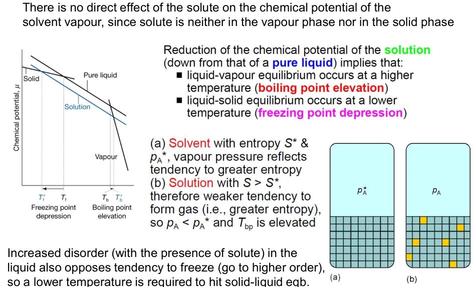
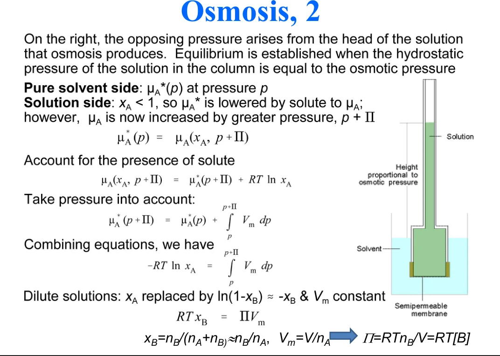

WEBSITE LESSON 13 · PCHEM1 LECTURE 13 · MIXTURE 3
依数性与活度
化学势统一解释 · 沸点与凝固点推导 · 渗透压 · 标准态 · 活度系数
13.1 · SOLVENT CHEMICAL POTENTIAL
统一起点：混合降低溶剂化学势
依数性包括蒸气压降低、沸点升高、凝固点降低和渗透压。在理想稀溶液极限，它们主要由溶质粒子数决定。设 A 为溶剂、B 为溶质，溶质不挥发，凝固时固相为纯 A；气相近似理想，并忽略小的压力修正。共同出发点是液相溶剂的化学势降低：
星号表示相同温压下纯组分参考态。理想混合即使 ΔmixH=0，也能因混合熵增加而使 Gibbs 能及溶剂化学势降低。气相和纯固相没有溶质混入，其化学势曲线不获得同样的混合项，所以气液、固液两组交点分别移向更高和更低温度。

来源：PChem1_lec13 Mixture3 20261027.pdf，PDF第1–2页。
13.2 · VAPOUR-PRESSURE LOWERING
蒸气压降低：从 Raoult 定律出发
这里是二元理想溶液，xA+xB=1。若溶质不挥发，测到的总蒸气压近似就是溶剂分压；若两者都挥发，总压需把各组分分压相加。稀释时 xB 近似等于溶质与溶剂的物质的量之比，所以相对降压直接反映溶质粒子数。真实体系则以溶剂活度替代 xA。
来源：PChem1_lec13 Mixture3 20261027.pdf，PDF第2页。
13.3 · BOILING-POINT ELEVATION
沸点升高：平衡条件到线性公式
在给定外压下，纯溶剂的沸点记 Tb*，溶液沸点记 Tb。气液平衡给出 μA*(g)=μA*(l)+RT ln xA，即 ln xA=ΔvapGm*RT。用 Gibbs–Helmholtz 关系并近似汽化焓恒定，从纯溶剂沸点积分到溶液沸点：
这一积分的温度微分来自 d ln xAdT=−ΔvapHmRT²。纯溶剂沸点处 xA=1，对数为零，给出积分下限。因为汽化焓为正，对数变为负值时 Tb 必须高于 Tb*；这一检查可以独立验证温差方向。
稀溶液中 ln(1−xB)≈−xB，再以小温差近似两温度乘积为纯溶剂沸点的平方。令 b 为溶质质量摩尔浓度，MA 为以 kg·mol−1 表示的溶剂摩尔质量，有 xB≈bMA，得到：
Kb 的单位为 K·kg·mol−1。它只由溶剂性质决定，所乘的 b 按每千克溶剂计；不要把溶液总体积或溶液质量放进这一浓度定义。
来源：PChem1_lec13 Mixture3 20261027.pdf，PDF第3页。
13.4 · FREEZING-POINT DEPRESSION
凝固点降低：更换平衡相并检查符号
凝固平衡改为 μA*(s)=μA*(l)+RT ln xA。以正的摩尔熔化焓 ΔfusHm 表示并近似恒定，积分得到下式；低于纯溶剂凝固点时，对数为负，符号相互一致。
ΔTf≡Tf*−Tf≈Kfb； Kf=R(Tf*)²MAΔfusHm
两种温差都习惯定义为正数，沸点用“溶液减纯溶剂”，凝固点用“纯溶剂减溶液”。该式要求形成近似纯溶剂固相，若生成固溶体或溶质同时析出，就需重新写各相的组成与化学势。电离或缔合会改变粒子数，可在足够稀时用 van’t Hoff 因子 i 修正为 iKfb。
来源：PChem1_lec13 Mixture3 20261027.pdf，PDF第4页。
13.5 · SOLID–SOLUTION EQUILIBRIUM
溶解度：同一方法的另一个应用
饱和溶液满足固体溶质 B 与溶液中 B 的化学势相等。若取纯液态 B（必要时为过冷液体）作参照，并近似熔化焓恒定，可写出：
理想溶液再令 aB=xB，得到理想溶解度估计。它显式包含溶质的熔点和熔化焓，真实溶解度还受到溶剂相互作用影响，因此属于化学势平衡方法的延伸，需与前述依数性区分。
来源：PChem1_lec13 Mixture3 20261027.pdf，PDF第4页。
13.6 · OSMOTIC PRESSURE
渗透压：用压力补偿混合效应
半透膜只允许溶剂通过。两侧同压时，纯溶剂一侧化学势较高，溶剂净流向溶液。对溶液侧额外施加压力 Π，直到两侧溶剂化学势相等，所需压力差就是渗透压。对不可压缩近似的溶剂，增压使化学势增加约 Vm,AΠ，于是：
Vm,AΠ=−RT ln xA≈RTxB
再取 xB≈nBnA，稀溶液体积 V≈nAVm,A，得到 van’t Hoff 关系。此处 c 是溶质粒子的物质的量浓度，和前面按溶剂质量计的 b 不同。
采用 SI 单位时，c 用 mol·m−3，Π 得 Pa。例如 298 K、0.0100 mol·L−1 非电解质，c=10.0 mol·m−3，Π≈24.8 kPa。反渗透用超过渗透压差的外压迫使溶剂由溶液侧流向纯溶剂侧；等渗则对应相近的有效渗透压。

来源：PChem1_lec13 Mixture3 20261027.pdf，PDF第5–7页。
13.7 · OSMOMETRY
渗透压法测摩尔质量
大分子在很低的物质的量浓度下仍能产生可测渗透压，因此可用渗透压测摩尔质量。若 ρm 表示溶质质量浓度，M 表示摩尔质量，则 c=ρmM。真实稀溶液在多组浓度下测量，再向零浓度外推：
课件用液柱压差 Π=ρgh，因此也可把 h 与质量浓度的比值作图，截距为 RTρgM。ρ 在此为液柱密度，勿与溶质质量浓度混用。外推可消除有限浓度非理想性的首项影响；对分散聚合物样品，这类依数性测量对应数均摩尔质量。
来源：PChem1_lec13 Mixture3 20261027.pdf，PDF第7–8页。
13.8 · ACTIVITY & STANDARD STATES
真实溶液：活度与标准态必须配套
活度把真实体系的化学势写成标准形式，a 无量纲，活度系数 γ 描述偏离选定理想参考态的程度。改变标准态会改变活度和标准化学势的数值，二者必须一起使用。
溶剂 A 通常采用纯液体标准态：aA=γAxA，当 xA→1 时 γA→1。在理想蒸气、忽略压力修正时 aA=pApA*。溶质 B 则常采用 Henry 无限稀释标准态，令 aB=pBKB=γBxB，当 xB→0 时 γB→1；两种极限分别在纯溶剂端和无限稀释端。
Henry 标准化学势可由纯液体标准态吸收一个常数项得到，它代表按无限稀释规律外推的假想参考态。若改用质量摩尔浓度标准，则必须写 b 与标准浓度 b° 的无量纲比值：
当 b→0 时 γb→1。理想稀溶液可在 b=b° 时具有标准化学势；真实溶液在该浓度下仍有 γ 的贡献。温度变化、浓度标度变化和标准态变化都应分清。
来源：PChem1_lec13 Mixture3 20261027.pdf，PDF第8–10页。
13.9 · REGULAR SOLUTIONS & MEASUREMENT
规则溶液与活度系数的测量
课件给出的对称 Margules 模型由超额 Gibbs 能 GE=nRTβxAxB 出发，对组分物质的量取偏导即可得到 Raoult 纯组分标准态下的活度系数：
β=0 恢复理想溶液；β＞0 给正偏差，β＜0 给负偏差。在规则溶液的相互作用模型中，它们分别对应不利和有利的异种相互作用。上式两组分都采用纯组分标准态，所以稀 B 端 γB→eβ；若换成 Henry 标准态，要把这一常数吸收到标准化学势，才会在无限稀释时趋于一。
实验可由蒸气压求活度，也可把凝固点或渗透压关系中的 xA 换成 aA，求得溶剂活度。在恒温恒压下，Gibbs–Duhem 方程把两个组分的活度联系起来：
xAd ln γA＋xBd ln γB=0
因此可用一个组分的活度曲线和边界条件积分得到另一个组分。做题先列平衡相与标准态，再选 x、a、b 或 c；使用对数前检查无量纲，使用线性依数性式前检查稀溶液条件。
为什么加溶质后沸点升高、凝固点却降低？
液相溶剂的化学势曲线向下移动，与气相曲线的交点移向高温，与纯固相曲线的交点移向低温。
活度系数趋近一，到底取哪个极限？
Raoult 标准态取该组分接近纯物质；Henry 或稀溶质浓度标准态取无限稀释。先确定参考态，再写极限。
来源：PChem1_lec13 Mixture3 20261027.pdf，PDF第10–12页。